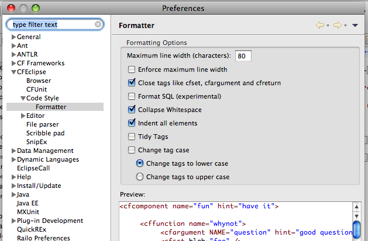

|
Content Assist
|
|
Proposal Categories
|
Content Assist has been updated to use proposal
categories. Eventually this will give us finer-grained control over
what we propose and when.
- Cycle through the proposal categories by repeatedly
pressing ctrl+space.
- The fist cycle, all proposals are listed.
- Eventually we will add a preference to filter the initial
list of proposals

|
|
Function Proposals
|
Function proposals are now a proposal category, and
are available anywhere proposals are. Their presentation has been
changed to a more intuitive format.

|
|
In-page Function Proposals
|
The current document is now parsed for functions and
function arguments, any found are added to the function proposal
list.
|
|
Code Formatter
|
|
Overview
|
This implementation uses the Jericho HTML
library. It will do a decent job of formatting tag-based source, but
has no support for cfscript or javascript. Any text within these
elements will be left alone.

|
|
Preferences
|
The preferences for changing the available code
formatting options are under Preferences > CFEclipse > Code Style > Formatter.

|
|
Editing
|
|
Print Margin
|
The print margin will now be at the correct offset
when the editor opens. I think a side effect to this fix might have
been this preference getting turned on for some users. It's
controlled via Preferences > CFEclipse > Editor > Show print margin

|
|
Occurrence Marking
|
Occurrence marking has been refactored to be more
like JTD. The selection of the current word is controlled by the same
preferences that control the double-click text selection under
Preferences > CFEclipse > Editor > Text Selection

|
|
Rename in file
|
The refactored occurrence marking enabled us to add a Rename in file
command. The default key binding is MOD1+2 R. This feature allows
you to quickly rename all of the currently marked occurrences.

|
|
Reconciler
|
The editor now uses a reconciling strategy deal, which basically means the
document will be parsed after you stop changing it, vs. only when you save.
There should probably be a preference to turn this off. But there isn't. Yet.
|
|
Auto-indent pasted tags
|
An initial "smart paste" implementation has been
added. This feature automatically indents pasted code to the correct
level, and keeps indentation at the correct level while adding tag
attributes on new lines within a tag. It still needs a little work.

|
|
Marking of opening and closing tags
|
The editor will now mark the start and end of
the current tag if the cursor is on the start or end of the tag.
The presentation style is configurable via Preferences > CFEclipse >
Editor > Annotations

|
|
Opening Files from the OS (CFEclipseCall)
|
You can now associate cfml files with the
CFEclipseCall executable to be able to open them directly in CFE
without starting a new instance of Eclipse each time. See the wiki
page for CFEclipseCall. |
|
Universal Welcome
|
|
Overview
|
CFEclipse now has some representation in the Universal Welcome
(the screen that shows up with a fresh workspace).
.
|
|
What's New
|
All this |
|
Cheatsheets
|
There is a cheatsheet with this release, but it is currently useless.
|
|
Updated Dictionaries
|
|
ColdFusion
|
The dictionaries for ColdFusion versions 5 through 8 have been updated, and a dictionary for version 9 has been added.
|
|
Railo
|
An initial dictionary for Railo 3 has been added.
|
|
Outline View
|
|
Display
|
The outline view has been refactored to provide more
usefual information.

|